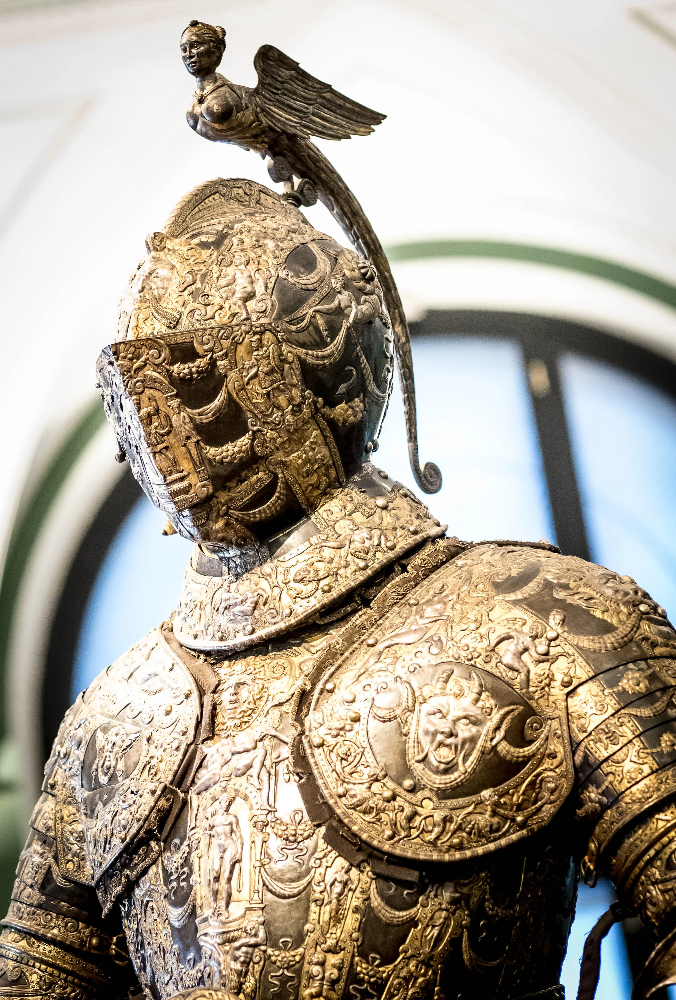
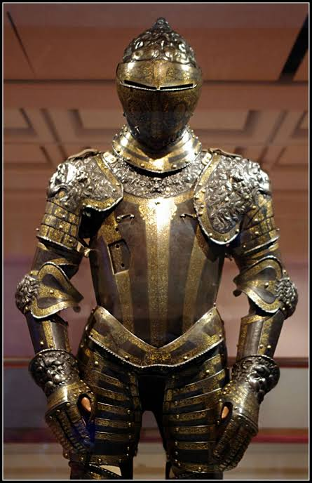
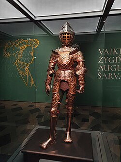
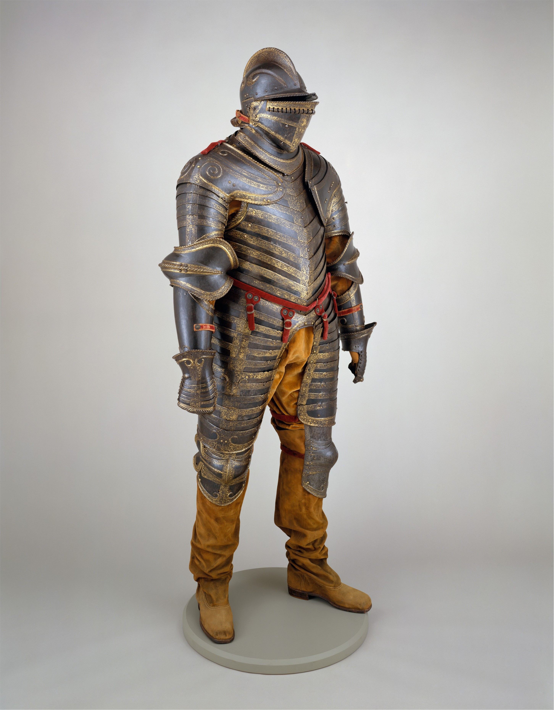
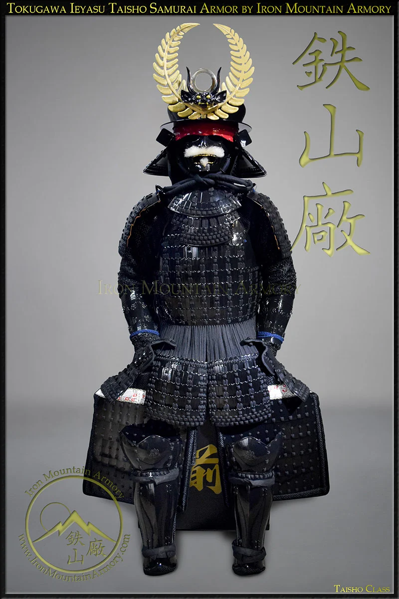
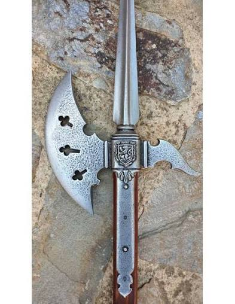
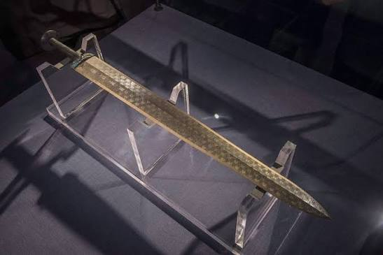
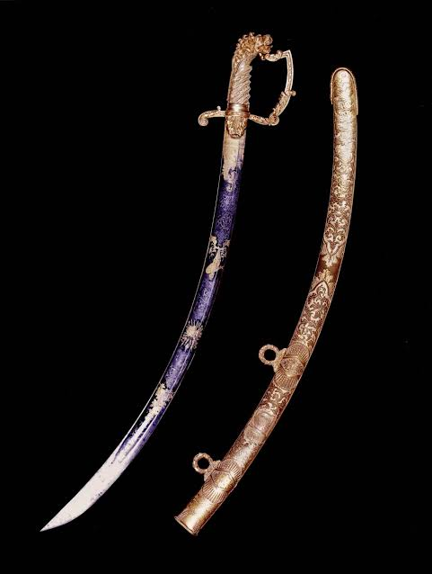
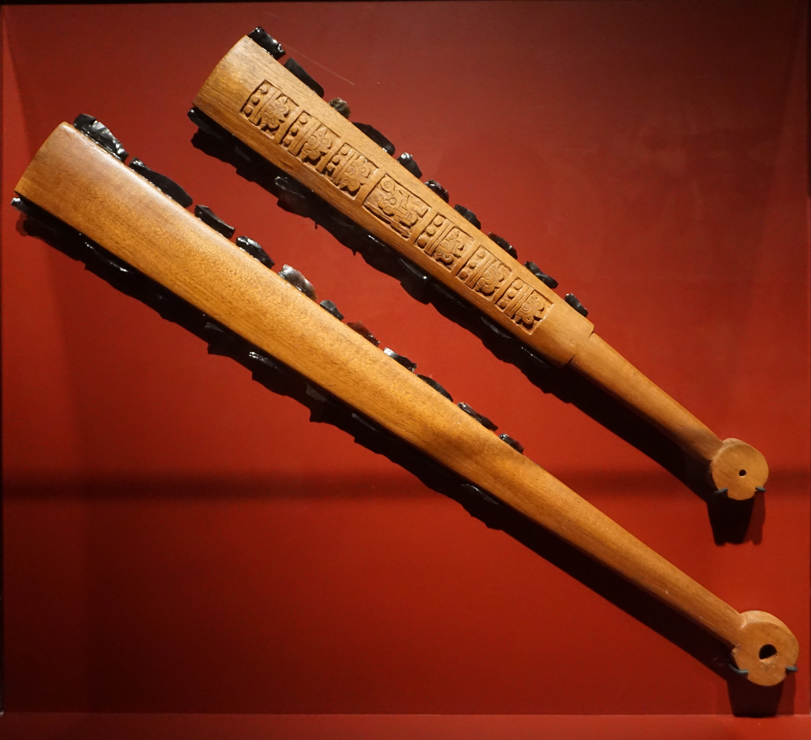
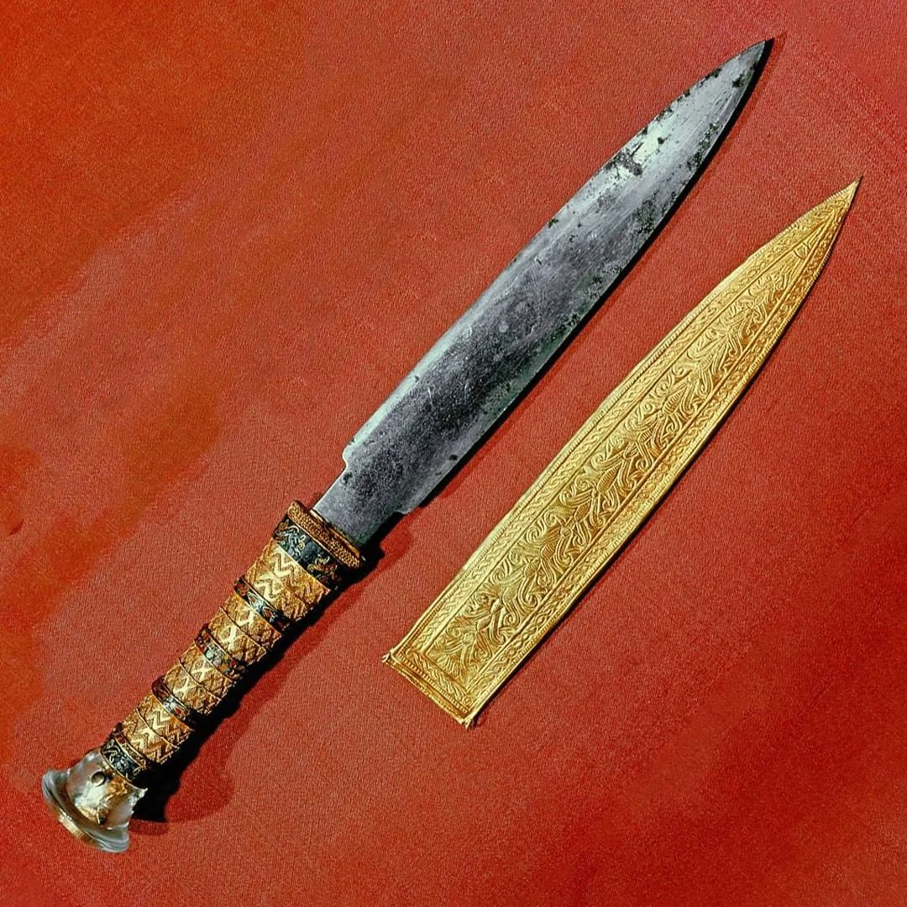

SKINS:
Art Games - Nation Battle
Jogo PvP competitivo de combate histórico de precisão
Loja Oficial de Armaduras Históricas (Skins)
Personalize seus guerreiros com armaduras fiéis aos registros históricos e arqueológicos.
Item |
Descrição |
Nação |
Preço |
|
|---|---|---|---|---|
 |
Armadura do Imperador do Sacro Império Romano-Germânico Ferdinando II
Réplica rica em gravuras sacras e placas de aço ornamentado, inspirada no traje de gala do imperador. |
Placa Imperial (Sacro Império Romano-Germânico) | R$: 29,89 | |
 |
Armadura do Leão de Henrique II (França)
Conjunto de combate cerimonial com gravuras do leão real francês e acabamento em relevo de alta precisão. |
Placa Ornamentada (França) | R$: 30,55 | |
 |
Armadura de Sigismundo II Augusto da Polônia
Armadura completa da cavalaria pesada polonesa com detalhes anatômicos e placas articuladas no tórax. |
Cavalaria Pesada (Polônia) | R$: 24,90 | |
|  |
Armaduras de Henrique VIII (Inglaterra)
Conjunto robusto projetado para o Campo do Pano de Ouro de 1520, focado em máxima cobertura e peso de combate. |
Torneio Real (Inglaterra) | R$: 25,50 | |
|  |
Armadura de Tokugawa Ieyasu
Tradicional Gusoku com do-maru e capacete Kabuto adornado com a crista da família Tokugawa, do período Sengoku. |
Yoroi (Japão Feudal) | R$: 30,99 | |
Seção de Espadas Históricas |
||||
 |
Alabarda Alemã
Arma de haste militar da Europa central, usada por tropas de infantaria e lanceiros entre os séculos XV e XVI, com ponta de aço e reforço para combate em formação. |
Alabarda (Alemanha / Sacro Império Romano-Germânico, séculos XV-XVI) | R$: 18,75 | |
 |
Espada de Goujian
Espada china de bronze do período dos Estados Combatentes, reconhecida pela sua lâmina elegante, técnicas de produção refinadas e valor arqueológico excepcional. |
Jian (China / Período dos Estados Combatentes, século IV a.C.) | R$: 22,40 | |
 |
Espada de Dom Pedro I
Espada imperial brasileira associada ao período de independência do Brasil, simbolizando a monarquia e o início do Império no começo do século XIX. |
Espada Imperial (Brasil / Império, 1822-1831) | R$: 20,15 | |
 |
Macuahuitl Asteca
Arma de guerra mexica de lâmina de obsidiana montada em madeira, usada por guerreiros astecas em combate corpo a corpo durante o período imperial mesoamericano. |
Macuahuitl (México / Império Asteca, séculos XIV-XVI) | R$: 19,90 | |
 |
Adaga de Tutancâmon
Adaga egípcia do Novo Reino, confeccionada em ouro e ferro meteórico, famosa por sua beleza ritual e pelo valor simbólico na cultura do Egito Antigo. |
Adaga Ritual (Egito Antigo / Novo Reino, século XIV a.C.) | R$: 24,60 | |
| Total de itens listados no catálogo: 10 itens ativos na temporada, incluindo armaduras e espadas históricas. | ||||